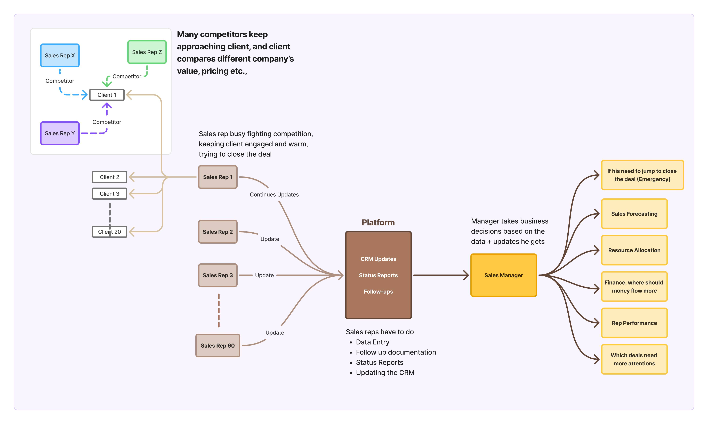
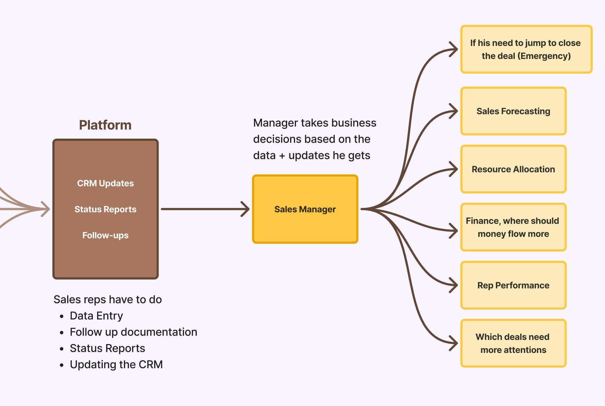
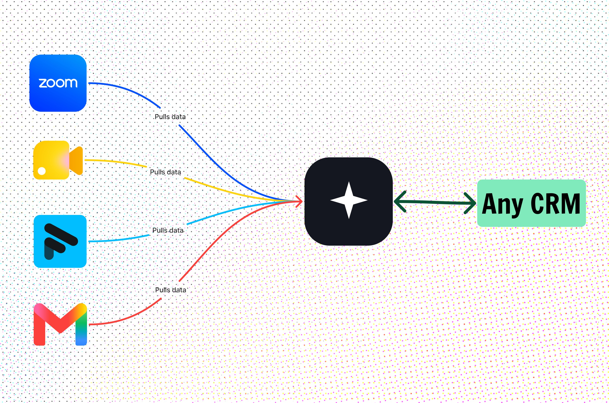
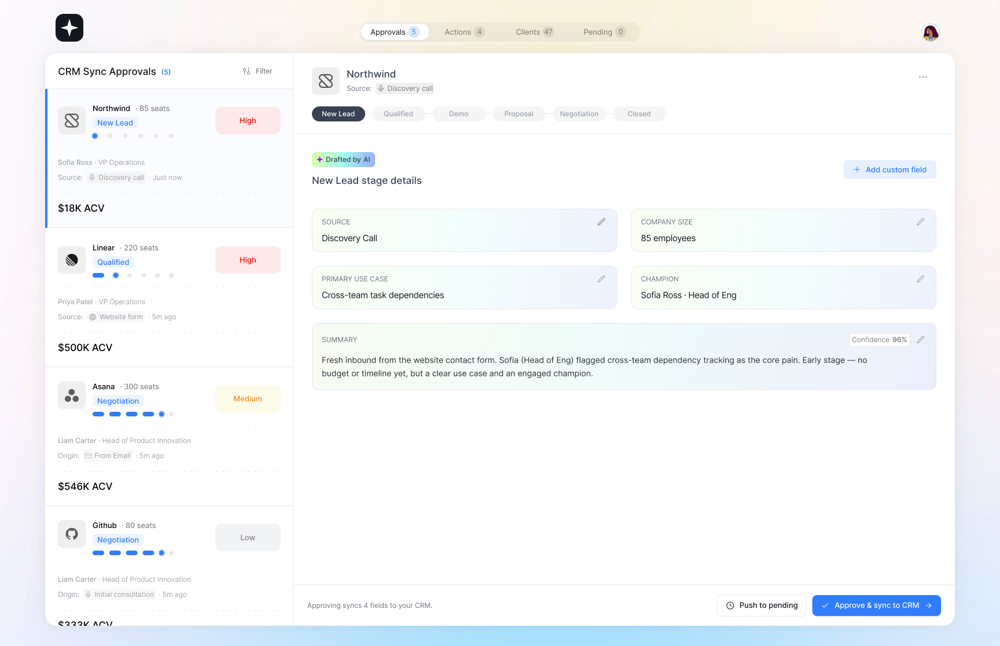
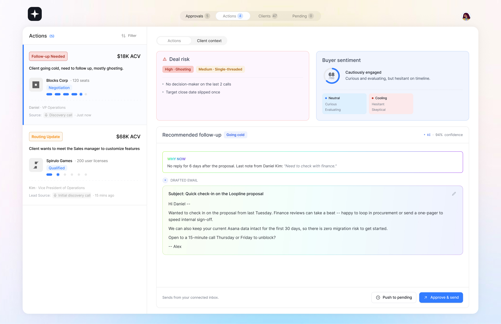

Saving the 70% time —
Smart Data Capture for Sales Reps
THE BRIEF
Sales reps know every deal nuance, but spend their day logging it.
A 60-person B2B SaaS team. Reps do reporting, not selling. Managers rely on CRM truth for forecasting but get blindsided.
Task: Design a solution using AI that can listen to calls, read emails, pull from CRM — summarize, flag, suggest.
CONTEXT
What sales should be vs what it is.


IDEAL VS REALITY
The job vs the work.
Talking & understanding clientsClosing dealsAdvancing dealsBuilding warm relationshipFollowing upRisk detectionProduct demos
Actual work is relationship. Operational work is logging, CRM updates, follow-ups. 70% of time.
All Problems
01
Ops overload
Day lost to logging, CRM, follow-ups.
02
Cold clients
No time to keep warm → competitor wins.
03
Zero incentive for hygiene
Paid to close, not document.
04
Forecast breaks
Bad docs → can't plan.
05
Context in head
Backup asks repeat Ques to client.
06
Not lazy. Busy.
Stores nuance in head because reporting is slow.
07
Unknown Factor for Rep
Rep dont know and understand how crucial is this for manager to set company vision & business goals
INSIGHTS
Rep Personal goal & Business goal are in opposite direction, not aligning
REP PERSONAL GOAL
Close → Insentive + Promotion
BUSINESS GOAL
Document → Long term
SOLUTION
1. Smart Data Capture — mediator between communication channels & CRM.
2. Now no more pain documenting, instead only Approvals for AI documentation by Sales Rep
3. Reducing the time & friction but maintaining the quality of documentation which helps manager & the company

01Context from channels
02Context from CRM,stages and fields of each stage
03Autodocumentation from Context
04Sales Rep Reviews & Approves
SCENARIO
FICTIONAL COMPANY
Loopline
Project-collab SaaS • 50-500 employees • 60 reps • $8K-40K ACV • 8 week cycle • Salesforce • 6 stages
EXPLORATIONS
7 Wireframe Iterations
Early tries showed everything. Final: not a dashboard, an Approvals inbox.
Final UI Designs


OUTCOME